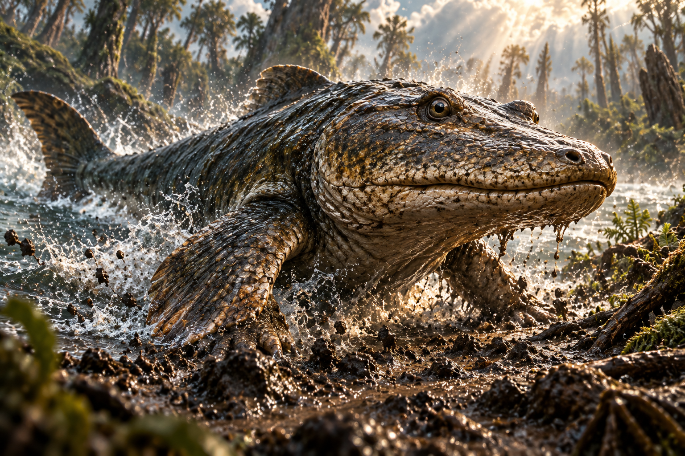
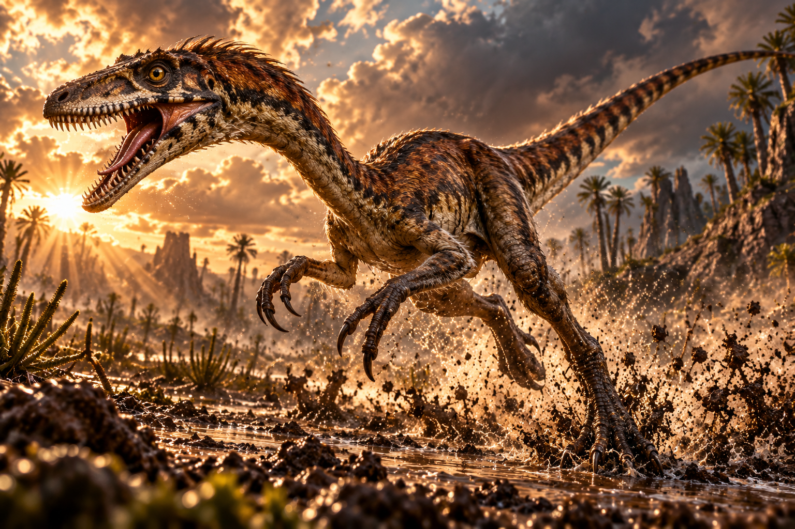

12 Hewan Purba Paling Ikonik
Dunkleosteus

Devon Akhir
382–358 juta tahun lalu
Dunkleosteus adalah ikan berzirah raksasa yang menjadi salah satu predator laut paling menakutkan pada zamannya.
Bagian kepalanya dilindungi lempeng tulang tebal, sementara rahangnya bekerja seperti bilah tajam untuk menghancurkan mangsa.
Tiktaalik

Devon Akhir
Sekitar 375 juta tahun lalu
Tiktaalik merupakan salah satu fosil transisi paling terkenal antara ikan bersirip cuping dan vertebrata berkaki awal.
Hewan ini memiliki leher, tengkorak pipih, serta struktur sirip yang menunjukkan tahap awal perkembangan tungkai.
Dimetrodon

Perm Awwal
295–272 juta tahun lalu
Dimetrodon dikenal dari layar besar yang membentang di sepanjang punggungnya. Meski sering disangka dinosaurus,
hewan ini sebenarnya termasuk synapsida dan secara evolusioner lebih dekat dengan garis keturunan mamalia.
Coelophysis

Trias Akhir
216–203 juta tahun lalu
Coelophysis adalah salah satu dinosaurus predator awal yang paling dikenal.
Tubuhnya ramping, ringan, dan ditopang oleh dua kaki kuat, membuatnya menjadi pemburu yang lincah di lingkungan Trias.
Stegosaurus

Jura Akhir
155-150 juta tahun lalu
Stegosaurus adalah dinosaurus herbivora yang terkenal dengan dua baris lempeng besar di punggungnya.
Ujung ekornya dilengkapi duri panjang yang kemungkinan digunakan untuk mempertahankan diri dari predator.
Brachiosaurus

Jura Akhir
154–150 juta tahun lalu
Brachiosaurus merupakan sauropoda raksasa dengan leher sangat panjang dan kaki depan yang lebih tinggi daripada kaki belakang.
Bentuk tubuh ini memungkinkannya menjangkau vegetasi tinggi yang sulit dicapai herbivora lain.
Allosaurus

Jura Akhir
155-145 juta tahun lalu
Allosaurus adalah salah satu predator besar utama pada periode Jura.
Dinosaurus ini memiliki tengkorak besar, gigi tajam, lengan bercakar, dan tubuh yang dirancang untuk memburu hewan besar.
Spinosaurus

Kapur Akhir
100-94 juta tahun lalu
Spinosaurus adalah theropoda besar dengan moncong panjang menyerupai buaya dan layar mencolok di punggungnya.
Berbagai ciri tubuhnya menunjukkan bahwa hewan ini memiliki adaptasi kuat untuk hidup dan berburu di lingkungan perairan.
Triceratops

Kapur Akhir
68-66 juta tahun lalu
Triceratops adalah dinosaurus herbivora besar yang mudah dikenali dari tiga tanduk di wajah dan perisai tulang besar di
belakang kepalanya. Hewan ini hidup pada masa-masa terakhir sebelum kepunahan dinosaurus non-unggas.
Tyrannosaurus rex

Kapur Akhir
68-66 juta tahun lalu
Tyrannosaurus rex adalah salah satu predator darat paling terkenal sepanjang sejarah.
Hewan ini memiliki tengkorak sangat besar, kaki belakang yang kuat, gigi tebal, dan gigitan yang mampu menghasilkan tekanan
luar biasa besar.
Smilodon

Pleistosen
Sekitar 2,5 juta- 10 ribu tahun lalu
Smilodon adalah kucing bertaring pedang yang hidup pada Zaman Es.
Tubuhnya sangat berotot dan memiliki sepasang taring atas panjang yang menjadi ciri paling khas dari predator ini.
Mammuthus primigenius

Pleistosen hingga Holosen awal
Sekitar 400 ribu–4 ribu tahun lalu
Mammuthus primigenius atau mammoth berbulu adalah salah satu mamalia Zaman Es paling ikonik.
Hewan ini memiliki bulu tebal, tubuh besar, serta gading panjang melengkung yang membantunya bertahan di lingkungan dingin.